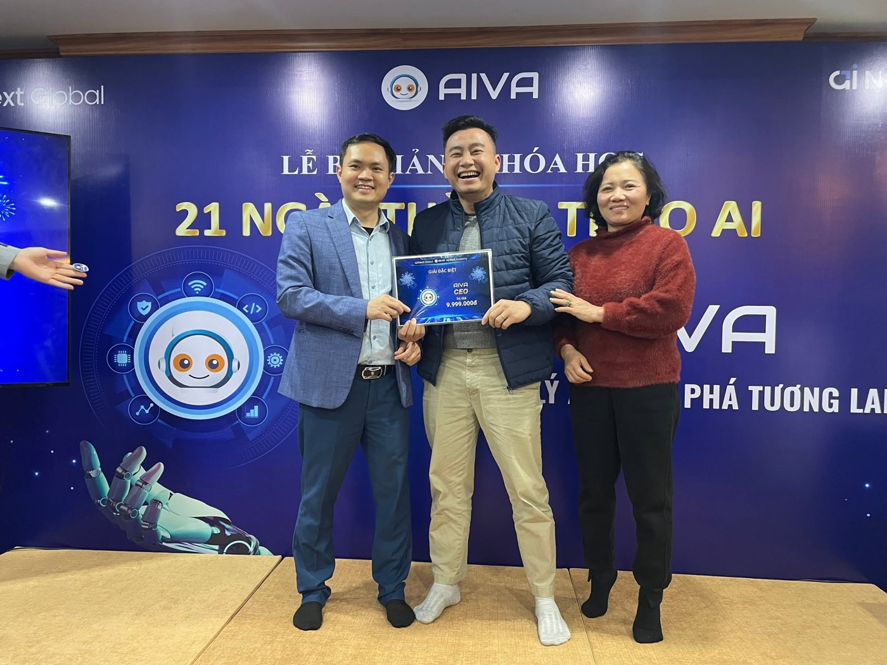
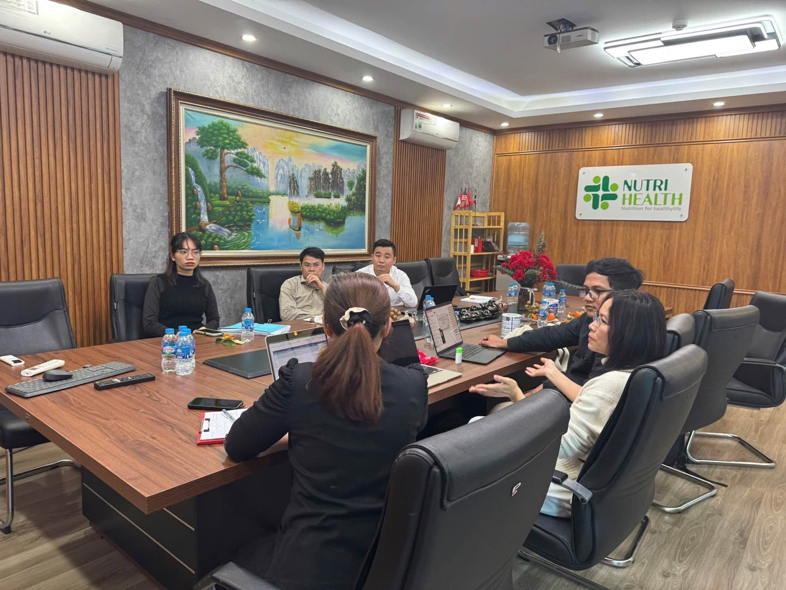
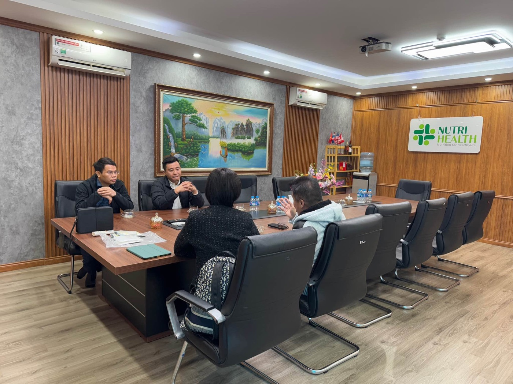
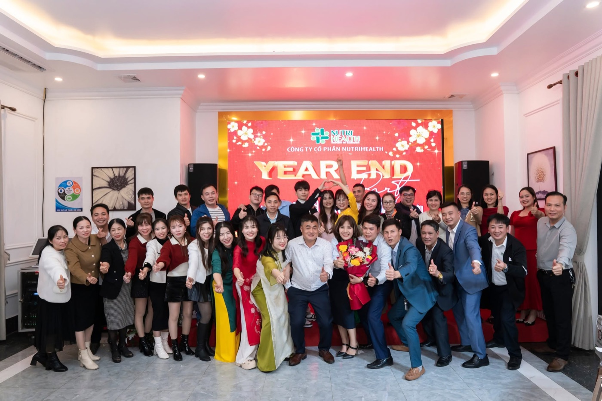
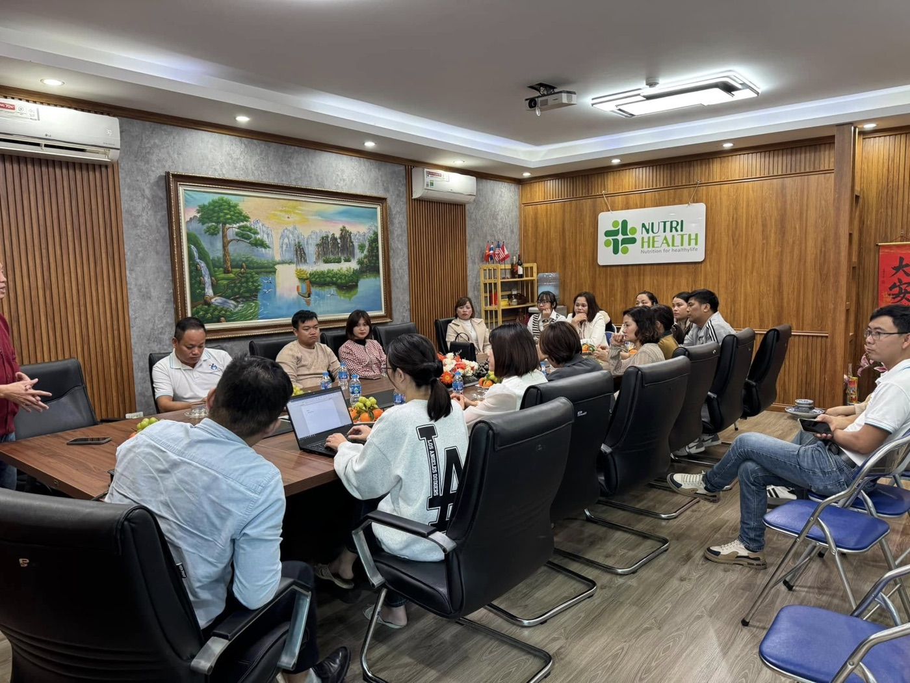
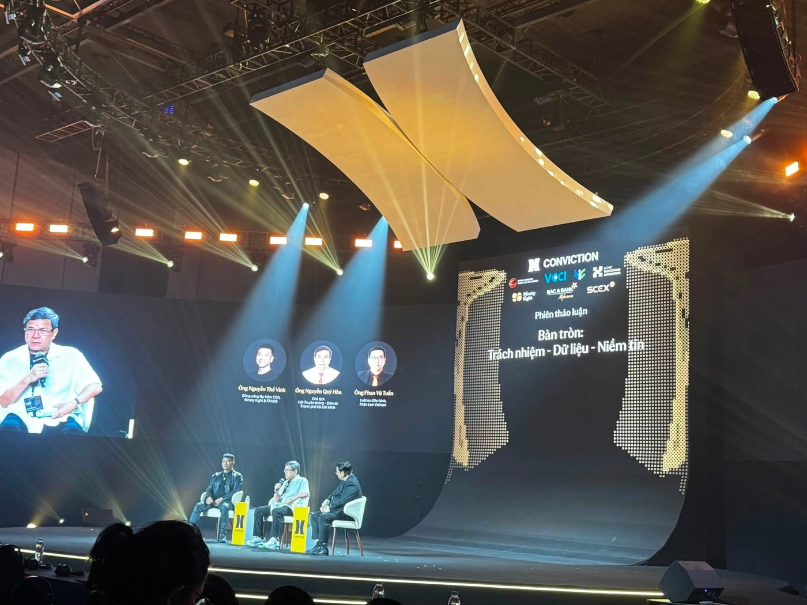
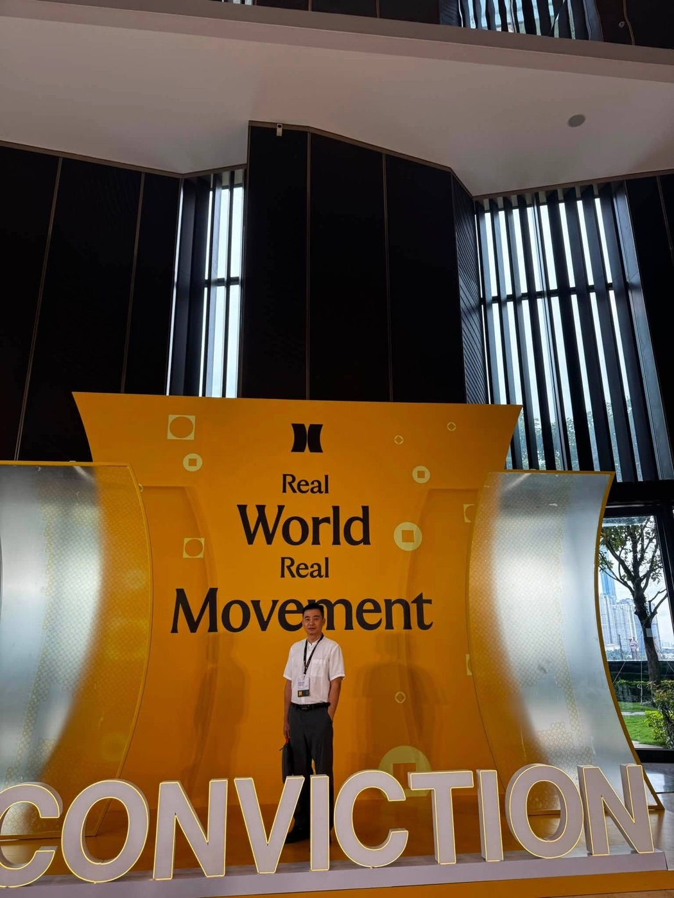

Corporate AI training
Role-based programmes for leaders, managers and functional teams, designed around real work scenarios.
Output: use cases, practice workflows and a 30-day adoption plan.
VISUN AI helps leaders identify the right digital roles, test them in real workflows and transfer a system the team can operate independently.
Choose the programme by audience, current capability and the business outcome you need to build.
Role-based programmes for leaders, managers and functional teams, designed around real work scenarios.
Practical learning paths for business owners, solopreneurs, freelancers and professionals.
Structured lessons, weekly practice and clear deliverables for self-paced learning.
Practical resources to assess use cases, data, users, risk and pilot success criteria.
With more than 17 years of experience, including 10 years in business management, operations and enterprise development across medical equipment, pharmaceuticals, and nutrition-product manufacturing and distribution, Hùng is currently CEO of VISUN Holdings Joint Stock Company and Co-Founder of Nutrihealth Joint Stock Company.
He brings extensive hands-on experience in strategy development, operating-model design, business development and team management. Alongside leading companies, he continuously advances his AI capabilities through specialist programmes including AI for CEO, AI for Trainer, AI Workforce, Anthropic Academy and other applied AI courses.
He completed the AI Trainer programme at Click AI Academy and is able to design training programmes and guide companies in applying AI to real work. By combining management thinking, business experience and applied AI capability, he focuses on helping leaders and teams improve performance, optimise workflows and progressively build sustainable AI transformation capabilities.
Real moments from Ths Trịnh Minh Hùng's journey of leading, sharing and working alongside business teams.







Each stage produces a clear output and a decision. Scaling begins only when the pilot provides credible evidence.
Map the current process, constraints, data and team capability.
Select a problem with both value and delivery readiness.
Start small, record the baseline and manage risk.
Document the workflow and train the operating team.
Expand only after results and conditions are verified.
VISUN AI does not publish performance claims without a baseline, measurement period and permission to disclose.
Data sources, access rights, reviewers and acceptance criteria are defined before build.
The process and operational lessons are documented; numbers are shared only when adequately measured.
Brand voice, information sources and human approval are built into the workflow.
Practical guidance for executives, managers and teams introducing AI into day-to-day operations.
A five-step framework from a real bottleneck to a testable pilot.
Read the Vietnamese article →A process needs clarity, stable data and a responsible owner before automation.
Assess the problem, data, users, risk and measurement plan before you begin.
VISUN AI uses this information to determine whether training, discovery or a small pilot is the right first step.
Tell us who performs the work, what information they use and what a good output should look like.